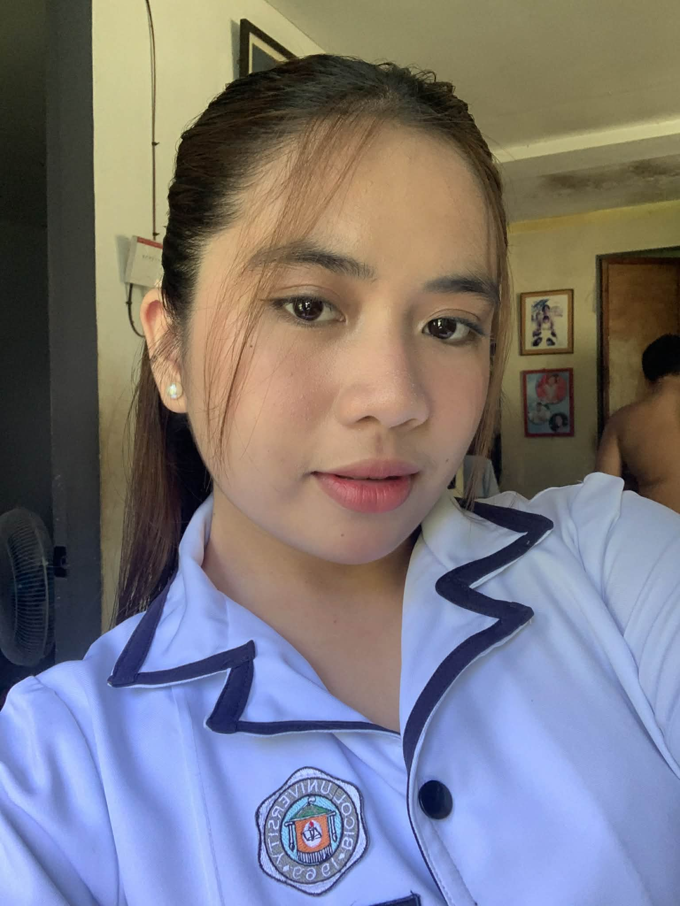

To apply my knowledge in Information Systems and leverage my problem-solving and creative skills to contribute to innovative technology solutions.
Bicol University-Polangui
Bachelor of Science in Information System | 2nd Year
Expected Graduation: 2029
| Relevant Coursework | Skills |
|---|---|
|
|
| Soft Skills | Hobbies & Interests | Languages |
|---|---|---|
|
|
|